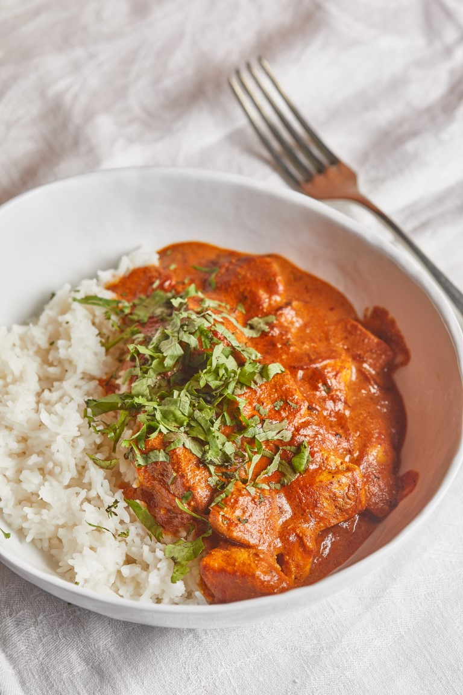

Indiai vajas csirke

Sokak kedvence ez az ezerarcú recept, hiszen több változata is van. Íme az én verzióm, ami krémes, fűszeres,
nagyon gazdag ízvilággal.
Hozzávalók 4 főre
A joghurtos pácos csirkéhez
- 800 g csirkemellfilé
- 300 g natúr görög joghurt
- 1 db gyömbér fele (hüvelykujjnyi, 5-7 centis vastagabb darab)
- 1 gerezd fokhagyma
- 2 tk garam masala
- 2 tk kurkuma
- 2 tk őrölt római kömény
- ½ tk csilipehely
- só, bors
- 1 tk citromlé
- Az elősütéshez
- 2 ek olívaolaj
- 30 g vaj
A paradicsomos szószhoz
- 50 g vaj
- 1 fej vöröshagyma (nagyobb)
- 2 gerezd fokhagyma
- a gyömbér másik fele
- 500 g passata
- 1 tk garam masala
- 1 tk római kömény
- 1 tk kurkuma
- ½ tk csilipehely (ízlés szerint több vagy kevesebb)
- só, bors
- 230 ml habtejszín
A körethez
- 200 g basmati rizs
- 1 ek vaj
- só
A tálaláshoz
Elkészítés
- A csirkemellet nagyobb kockákra vágjuk, egy tálban alaposan összekeverjük a pác összetevőivel, és 20-30
percig pihentetjük.
- Ha letelt az idő, egy nagyobb serpenyőben az olívaolajat és a vajat közepes lángon
felhevítjük, és a húskockákat több részletben, oldalanként kb. 3-3 percig elősütjük.
- A tálban maradt joghurtos pácot is felhasználjuk, rákanalazzuk az elősütött, félretett húsra.
- Ugyanabban a serpenyőben, alacsony lángon felolvasztjuk az újabb adag vajat, felkaparjuk a letapadt
pörzsanyagot, és hozzáadjuk a vékony szeletekre vágott vöröshagymát, néhány perces fonnyasztás után az
ugyancsak vékonyra szelt fokhagymát, illetve a gyömbér másik felét.
- Kb. 5 percig, alkalmanként kevergetve
sütjük őket, majd jöhet hozzá a passata és a fűszerek is.
- Pár perces csendes forralás után belekeverjük a
tejszínt is.
- Ennél a szakasznál a rizst alaposan átmossuk egy szűrővel, majd egy gyorsforralóban feltesszük főni a
víz, a
vaj és a só társaságában. Alacsony lángon, lefedve, keverés nélkül főzzük 12-15 percig (ha erősebb a
tűzhely, 8-10 perc alatt is elkészülhet, szóval legyetek résen).
- Mikor a rizst feltesszük főzni, a
paradicsomos tejszínes szószba rakjuk a korábban elősütött húst, a pihenés közben engedett levekkel és a
maradék joghurtos páccal együtt.
- Mikor kész a rizs, egy villával átkeverjük, fellazítjuk, ettől még
pergősebb lesz.
- Tálaláshoz apróra vágott friss koriandert szórunk rá, és megpróbáljuk nem egyszerre megenni az egészet.
Home